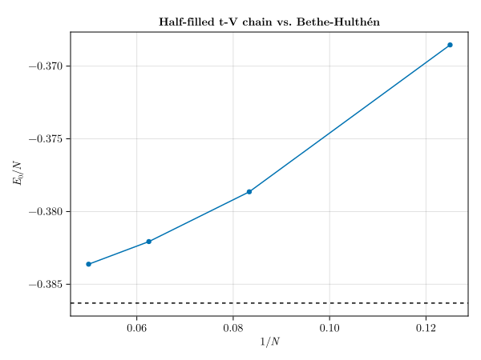

Spinless-fermion t-V chain vs. the exact Bethe-Hulthén solution
The one-dimensional spinless-fermion t-V chain describes fermions hopping on a ring with a nearest-neighbor density-density interaction:
\[\hat{H} = -t \sum_{i=1}^{N} \left( \hat{c}_i^{\dagger} \hat{c}_{i+1} + \text{h.c.} \right) + V \sum_{i=1}^{N} \hat{n}_i \hat{n}_{i+1},\]
with periodic boundary conditions, $\hat{c}_{N+1} \equiv \hat{c}_1$. Unlike the Hubbard chain, this model has no fermionic Bethe-ansatz solution directly — but it maps exactly, via the Jordan-Wigner transformation, onto the spin-1/2 XXZ chain. At half filling ($N_f = N/2$) and at the isotropic point $V = 2t$, this mapping gives
\[\frac{E_0}{N} \xrightarrow{N\to\infty} 2t\left(\frac{1}{4} - \ln 2\right) + \frac{V}{4},\]
where $\tfrac14-\ln 2$ is the classic Bethe (1931)[Bethe_1931] / Hulthén (1938)[Hulthen_1938] ground-state energy per site of the isotropic Heisenberg chain. In this example we build the symmetry-resolved half-filled t-V Hamiltonian for a few chain lengths $N$ and check that the finite-size ground-state energy per site converges toward this exact value as $N$ grows.
Defining the spinless-fermion DoF-object and the Hamiltonian
A SpinlessFermion site's digit is its occupation number (0 or 1), so no bit tricks are needed here (unlike the spinful Hubbard case). We assemble the Hamiltonian using the Jordan-Wigner sign convention dec/inc + cispi(sum(read(...))), the same idiom already used for spinless fermions elsewhere in the package (test/spinless_fermions.jl):
using SymBasis
using LinearAlgebra, SparseArrays
dofo = dof_object(SpinlessFermion())
function build_hamiltonian(N, ba; t=1.0, V=0.0)
hilbert_dim = length(ba.states)
I_vec, J_vec, V_vec = Int[], Int[], ComplexF64[]
for (n, sₙ) in enumerate(ba.states)
Nₙ = ba.norms[n]
diagV = sum(V * read(sₙ, x) * read(sₙ, mod1(x + 1, N)) for x in 1:N)
push!(I_vec, n); push!(J_vec, n); push!(V_vec, diagV)
for x in 1:N
x1 = mod1(x + 1, N)
for (site_from, site_to) in ((x1, x), (x, x1))
read(sₙ, site_from) == 1 || continue
read(sₙ, site_to) == 0 || continue
temp = dec(sₙ, site_from)
jw = cispi(sum(read(temp, y) for y in 1:(site_from-1); init=0) -
sum(read(temp, y) for y in 1:(site_to-1); init=0))
temp = inc(temp, site_to)
rep_s, rep_fac = representative(temp, ba)
m = state_index(ba, rep_s)
m === nothing && continue
fac = -t * jw * sqrt(ba.norms[m] / Nₙ) * rep_fac
push!(I_vec, m); push!(J_vec, n); push!(V_vec, fac)
end
end
end
return sparse(I_vec, J_vec, V_vec, hilbert_dim, hilbert_dim)
endbuild_hamiltonian (generic function with 1 method)Symmetry-resolved basis
We fix the particle number to half filling ($N_f = N/2$) with TotalSpinlessFermionicNumber, and further resolve lattice translation with Translational. Unlike the Hubbard/Lieb-Wu chain, there's no shortcut here to just two momentum sectors: the half-filled ring's ground state can sit in a non-obvious pair of momentum sectors (a consequence of how the periodic Jordan-Wigner string interacts with the particle-number parity), so every sector $K=0,\ldots,N-1$ needs to be checked.
function half_filled_sector(N, K)
n = N ÷ 2
pn_sg = sym(TotalSpinlessFermionicNumber(n, N), dofo)
T_sg = sym(Translational(K, mod1.((1:N) .+ 1, N)), dofo)
return basis(dofo, N, pn_sg ∘ T_sg)
end
ba = half_filled_sector(8, 0)
length(ba.states)9Ground-state energy per site vs. the Bethe-Hulthén target
bethe_hulthen_e0_per_site(t, V) = 2t * (1 / 4 - log(2)) + V / 4bethe_hulthen_e0_per_site (generic function with 1 method)For each chain length we diagonalize every momentum sector at the isotropic point $V=2t$ and keep the lowest ground energy, using Arpack.jl's Lanczos solver with a dense fallback for the smallest sectors:
using Arpack
function ground_energy(h)
try
return eigs(h, nev=1, which=:SR) |> first |> first |> real
catch
return eigvals(h |> collect) |> first |> real
end
end
Ls = (8, 12, 16, 20)
t = 1.0
V = 2t
e0_per_site = Dict{Int,Float64}()
for L in Ls
bases = [half_filled_sector(L, K) for K in 0:(L-1)]
E0 = minimum(ground_energy(build_hamiltonian(L, ba; t=t, V=V)) for ba in bases)
e0_per_site[L] = E0 / L
endPlotting the convergence to the Bethe-Hulthén value
using CairoMakie
fig = Figure()
ax = Axis(fig[1, 1]; xlabel=L"1/N", ylabel=L"E_0/N", title="Half-filled t-V chain vs. Bethe-Hulthén")
scatterlines!(ax, 1 ./ collect(Ls), [e0_per_site[L] for L in Ls])
hlines!(ax, [bethe_hulthen_e0_per_site(t, V)]; color=:black, linestyle=:dash)
fig
The solid points connected by a line are the finite-size ground-state energies per site; the dashed horizontal line is the Bethe-Hulthén thermodynamic-limit value. Convergence here is visibly slower than in the Hubbard/Lieb-Wu example, since the isotropic Heisenberg point has a marginally-irrelevant operator that produces logarithmic (not just power-law) finite-size corrections. See test/tv_chain_bethe_hulthen.jl in the package repository for a more exhaustive validation of this construction, including an exact, assertion-checked cross-check against the free-fermion ($V=0$) limit and the momentum-sector dimensions.
- Bethe_1931H. Bethe, Zur Theorie der Metalle, Z. Phys. 71, 205 (1931).
- Hulthen_1938L. Hulthén, Über das Austauschproblem eines Kristalles, Ark. Mat. Astron. Fys. 26A, No. 11 (1938).